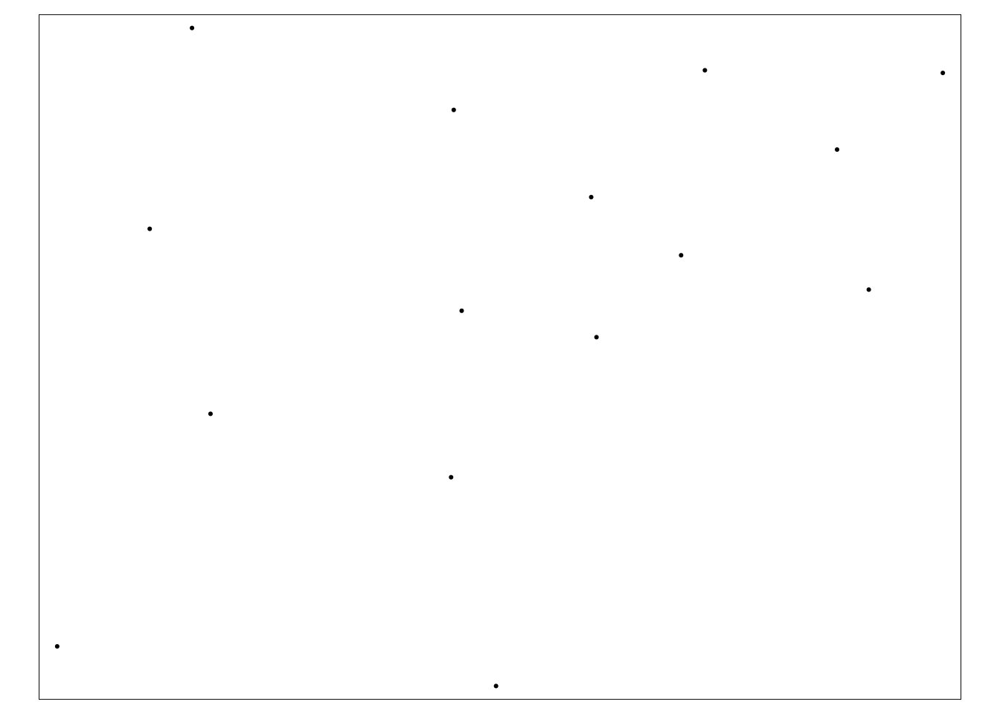
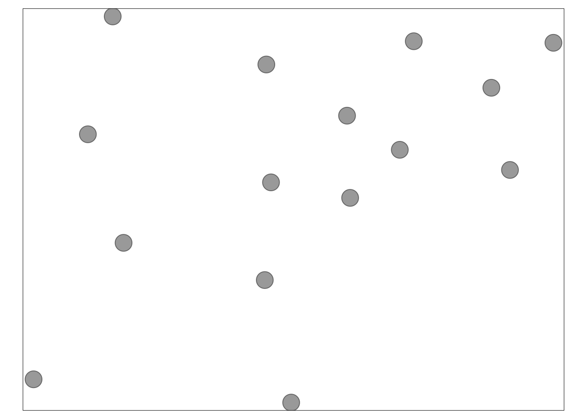
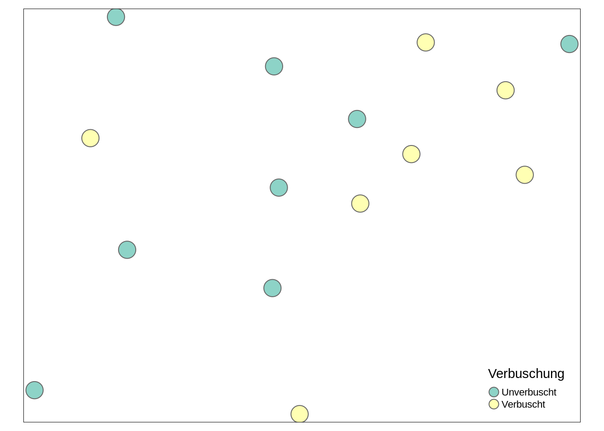
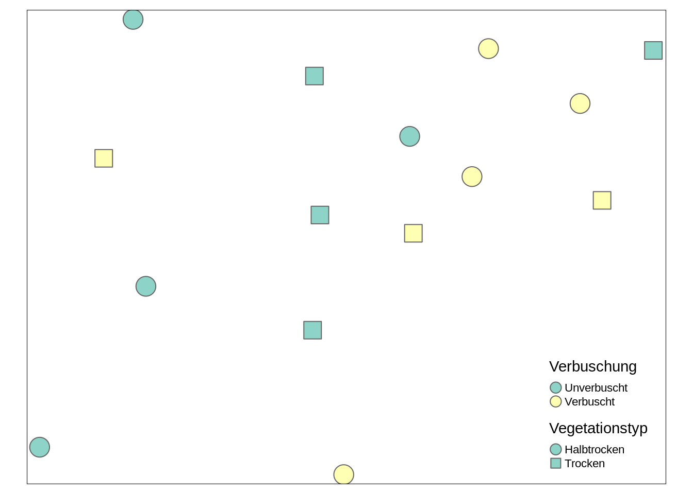
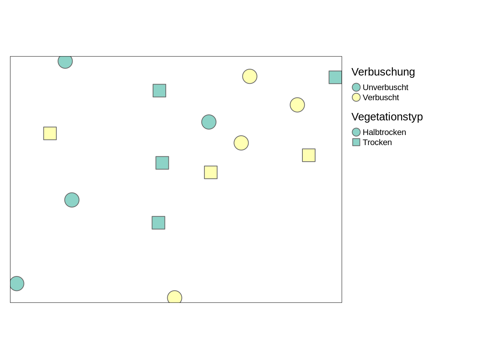
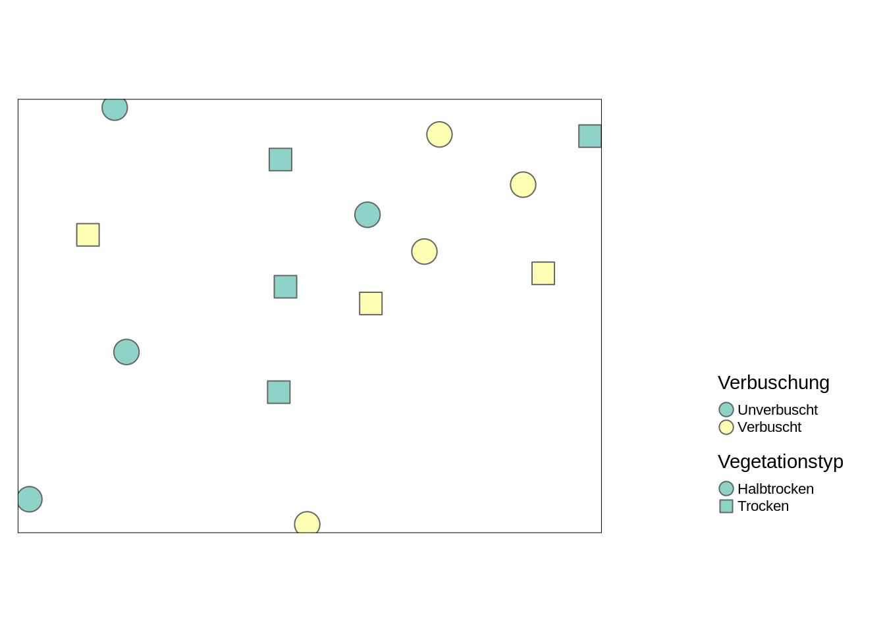
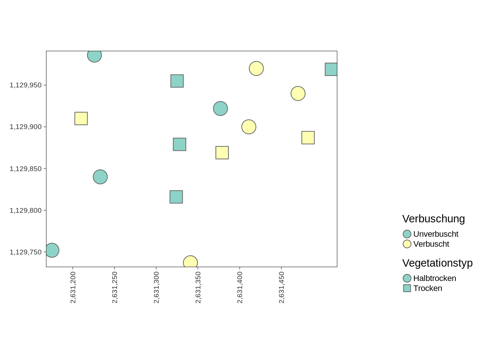
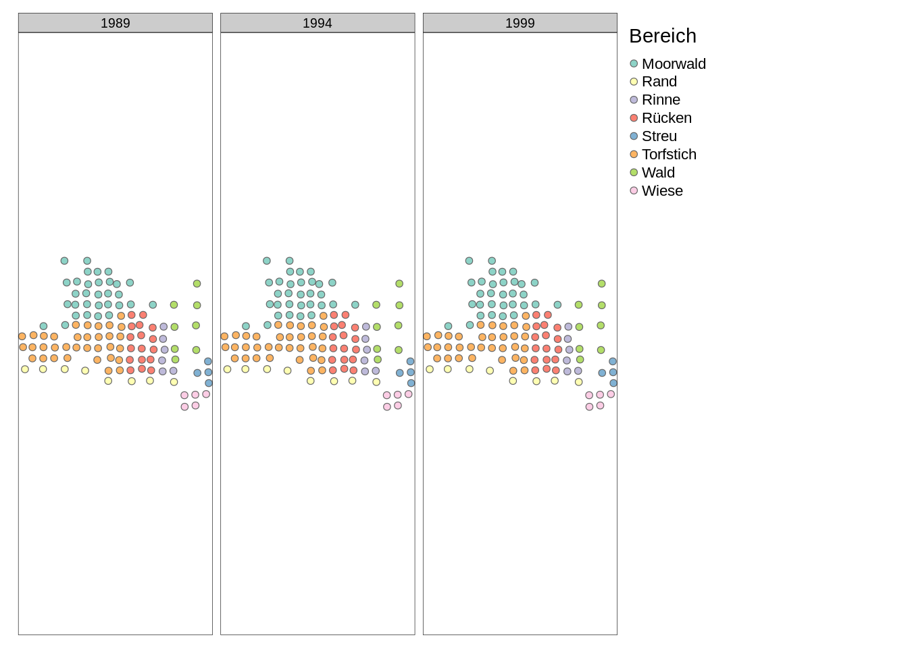

install.packages("tmap")Übung 1
Einfache Vektordaten
Vorbereitung
- Erstelle ein neues RStudio Projekt
- Erstelle ein neues R-Script mit dem Namen
Uebung_1.R - Lade dir den Datensatz Datensatz Ausserberg für Hausaufgabe 1 herunter (
Vegauf_Ausserberg_2019.xlsx)
Übung 1.1
- Importiere
Vegauf_Ausserberg_2019.xlsxwie gewohnt alsdata.framein R. - Speichere die
data.framein der Variabelausserberg
Übung 1.2
Such dir die Koordinaten im data.frame heraus. In welchem Koordinatensystem liegen diese wohl vor?
Übung 1.3
Visualisiere die Erhebungsplots räumlich als Scatterplot. Die x- und y-Achsen sind jetzt räumliche Koordinaten, auf was musst du achten?
Übung 1.4
Installiere nun das R-Package sf und lade es in die aktuelle Session.
Übung 1.5
Wir machen nun aus dem data.frame ausserberg ein Vektor-Objekt und verwenden dazu die Funktion st_as_sf() aus der eben installierten Library sf.
Mit dem Argument coords = informieren wir dieser Funktion, wo unsere Koordinateninformation liegt. Probiere etwas rum bis es funktioniert und weise danach das Neue Objekt der Variabel ausserberg_sf zu.
Übung 1.6
Vergleiche nun ausserberg und ausserberg_sf in der Konsole. Wodurch unterscheiden sie sich?
Wir haben nirgends deklariert, in welchem Koordinatenbezugssystem sich unsere Koordinaten befinden.
Input CRS ansprechen
Nun wollen wir unserem Datensatz das richtige Koordinatenreferenzsystem zuweisen. Wie sprechen wir das korrekte Koordinatensystem CH1903+ LV95 an?
Im Wesentlichen gibt es 3 Methoden, ein Koordinatenreferenzsystem anzusprechen:
- proj.4
- Well known text wkt
- EPSG
proj.4 (optional)
- In einem
proj.4-string werden alle wichtige Aspekte des Koordinatenreferensystems abgespeichert (ellipse, datum, projection units) - der
proj.4-strings verwenden einkey=valuesystem, die mit+kombiniert werden - der
proj.4-string vonCH1903+LV95sieht folgendermassen aus:
+proj=somerc +lat_0=46.95240555555556 +lon_0=7.439583333333333 +k_0=1
+x_0=2600000 +y_0=1200000 +ellps=bessel +towgs84=674.374,15.056,405.346,0,0,0,0
+units=m +no_defs
Well known text wkt (optional)
- Logik ähnlich wie
proj.4-strings - verwenden einen anderen Syntax (
key[value]) - der wkt von
CH1903+LV95sieht folgendermassen aus
PROJCS["CH1903+ / LV95",
GEOGCS["CH1903+",
DATUM["CH1903+",
SPHEROID["Bessel 1841",6377397.155,299.1528128,
AUTHORITY["EPSG","7004"]],
TOWGS84[674.374,15.056,405.346,0,0,0,0],
AUTHORITY["EPSG","6150"]],
PRIMEM["Greenwich",0,
AUTHORITY["EPSG","8901"]],
UNIT["degree",0.0174532925199433,
AUTHORITY["EPSG","9122"]],
AUTHORITY["EPSG","4150"]],
PROJECTION["Hotine_Oblique_Mercator_Azimuth_Center"],
PARAMETER["latitude_of_center",46.95240555555556],
PARAMETER["longitude_of_center",7.439583333333333],
PARAMETER["azimuth",90],
PARAMETER["rectified_grid_angle",90],
PARAMETER["scale_factor",1],
PARAMETER["false_easting",2600000],
PARAMETER["false_northing",1200000],
UNIT["metre",1,
AUTHORITY["EPSG","9001"]],
AXIS["Y",EAST],
AXIS["X",NORTH],
AUTHORITY["EPSG","2056"]]
EPSG Code (wichtig)
die European Petroleum Survey Group (EPSG): ein wissenschaftliche Organisation (Geodäsie, Vermessung und Kartographie)
öffentliche Datenbank um Koordinatenbezugssysteme (sowie Ellipsoide und Geodätisches Datumsangaben) festzuhalten
jede Einträge hat einen Referenz Code (siehe epsg.io)
Wie lautet der EPSG Code für
CH1903+LV95?der EPSG Code ist der einfachste Weg, ein Koordinatenbezugssystem anzusprechen
am besten ist, man notiert sich die EPSG Codes unserer wichtigsten Koordinatenbezugssysteme:
Koordinatenbezugssystem EPSG Code Kommentar Einheit CH1903+ LV952056Neues Koordinatensystem der Schweiz Meter CH1903 LV0321781Altes Koordinatensystem der Schweiz Meter WGS844326Weltweites Koordinatensystem Grad
Übung 1.8
Weise nun unserem Datensatz das richtige Koordinatensystem zu. Dafür brauchst du die Funktion st_crs sowie den EPSG Code des Koordinatensystems.
Übung 1.9
Rweiss nun, das es sich beiaussenberg_sfum einen Vektordatensatz handeltaussenberg_sfreagiert nun anders auf gewisse functions- teste die Funktion
plotmitaussenberg_sf
Input tmap
- In
Rgibt es dezidierte libraries, um geografische Daten zu visualisieren - Wir werden im Unterricht die library
tmapverwenden. - Installiere dieses Package und lade es in die aktuelle session.
library("tmap")tmapfunktioniert nach einem “layer”-Prinzip- ein Layer besteht aus 2 Komponenten:
tm_shape(): der Datensatztm_dots(odertm_lines,tm_polygons…): die Darstellungsform
tm_shape(ausserberg_sf) + # datensatz
tm_dots() # darstellungsform
#
tm_shape(ausserberg_sf) +
tm_bubbles()
#
tm_shape(ausserberg_sf) +
tm_bubbles(col = "Verbuschung")
#
tm_shape(ausserberg_sf) +
tm_bubbles(col = "Verbuschung", shape = "Vegetationstyp")
#
tm_shape(ausserberg_sf) +
tm_bubbles(col = "Verbuschung", shape = "Vegetationstyp") +
tm_layout(legend.outside = TRUE)
#
tm_shape(ausserberg_sf) +
tm_bubbles(col = "Verbuschung", shape = "Vegetationstyp") +
tm_layout(legend.outside = TRUE, legend.position = c("right","bottom"))
#
tm_shape(ausserberg_sf) +
tm_bubbles(col = "Verbuschung", shape = "Vegetationstyp") +
tm_layout(legend.outside = TRUE, legend.position = c("right","bottom")) +
tm_grid(labels.rot = c(90, 0), lines = FALSE)






Übung 1.10
Erstellt nun eine eigene Karte mit tmap und euren Daten. Versucht, den unten stehenden Plot zu rekonstruieren (oder probiert was eigenes).
Input CRS wechseln
- Bisher: Dem Datensatz ein Koordinatensystem zuweisen.
- Auch häufig: Koordinaten vom einen Koordinantensystem in ein anderes übersetzen (transformieren)
- Wichtig unterschied!
- Koordinatenbezugssystem zuweisen
- verändert die Koordinatenwerte nicht,
- ist nur sinnvoll, wenn das Koordinatensystem nicht oder falsch zugewiesen wurde
- Koordinatenbezugssystemtransformieren
- verändert die Koordinatenwerte
- ist unter verschiedenen Szenarien sinnvoll (um versch. Datequellen zu integrieren)
Übung 1.11
- Transformiert
ausserberg_sfin das Koordinatenbezugssystem WGS84 - Speichert den output in einer neuen Variabel (z.B
ausserberg_sf_wgs84) - Schaut euch diesen Datensatz an, was hat sich verändert?
- Tipp: Nutzt dafür die Funktion
st_transform()
Übung 1.12 (Optional)
Wiederhole nochmal den letzten tmap plot , diesmal mit dem Datensatz ausserberg_sf_wgs84. Wie unterscheiden sich die Plots?
Input Räumliche Datenformate
- CSVs eignen sich nur bedingt um räumliche Daten abzuspeichern
- Um aus
Vegauf_Ausserberg_2019_Kopfdaten.csvein räumliches Objekt zu machen mussten wir verschiedene Schritte erledigen- CSV als Dataframe einlesen
- CSV in
sfobjekt konvertieren - CRS Zuweisen
- Wir können
ausserberg_sfin einem explizit räumlichen Datenformat abspeichern, sodass die obigen Schritte beim importieren nicht nötig sind:
write_sf(ausserberg_sf, "data-processed/ausserberg.gpkg")Das File aussenberg.gpkg kann in verschiedenen GIS-Programmen geöffnet werden. Versucht mal, das File in QGIS zu öffnen.
Auch beim Einlesen in R ist klar, dass es sich dabei um räumliche Daten handelt. Das Koordinatenbezugssstem EPSG 2045 ist jetzt automatisch zugewiesen.
rm(ausserberg_sf)
ausserberg_sf <- read_sf("data-processed/ausserberg.gpkg")
ausserberg_sfSimple feature collection with 15 features and 34 fields
Geometry type: POINT
Dimension: XY
Bounding box: xmin: 2631175 ymin: 1129737 xmax: 2631510 ymax: 1129986
Projected CRS: CH1903+ / LV95
# A tibble: 15 × 35
Plot Verbuschung Vegetationstyp Date Genauigkeit Meereshoehe Exposition
<chr> <chr> <chr> <chr> <int> <int> <int>
1 VS19_1 Verbuscht Trocken 18.06.… 5 1298 171
2 VS19_2 Unverbuscht Halbtrocken 18.06.… 5 1263 190
3 VS19_3 Verbuscht Halbtrocken 19.06.… 10 1282 144
4 VS19_4 Unverbuscht Halbtrocken 18.06.… 3 1295 140
5 VS19_5 Unverbuscht Trocken 18.06.… 3 1284 180
6 VS19_6 Unverbuscht Trocken 19.06.… 3 1280 165
7 VS19_7 Unverbuscht Halbtrocken 18.06.… 30 1320 180
8 VS19_8 Unverbuscht Halbtrocken 18.06.… 30 1287 180
9 VS19_9 Verbuscht Trocken 19.06.… 30 1266 180
10 VS19_10 Unverbuscht Trocken 18.06.… 5 1306 133
11 VS19_11 Verbuscht Halbtrocken 19.06.… 5 1277 133
12 VS19_12 Verbuscht Trocken 18.06.… 5 1280 133
13 VS19_13 Unverbuscht Trocken 18.06.… 5 1291 165
14 VS19_14 Verbuscht Halbtrocken 18.06.… 5 1242 125
15 VS19_15 Verbuscht Halbtrocken 19.06.… 5 1299 135
# ℹ 28 more variables: Neigung <int>, Veghoehe_1 <int>, Veghoehe_2 <int>,
# Veghoehe_3 <dbl>, Veghoehe_4 <int>, Veghoehe_5 <int>, Veghoehe_mean <dbl>,
# Veghoehe_max <int>, Veg.Schicht <dbl>, Baumsch. <dbl>, Strauchsch. <dbl>,
# Krautsch. <dbl>, Moossch. <int>, Streu <dbl>, Toth. <int>,
# Steine.Fels <dbl>, Kies.Grus <int>, Feinboden <dbl>,
# gew_Temperaturzahl <dbl>, gew_Kontinentalitaetszahl <dbl>,
# gew_Lichtzahl <dbl>, gew_Feuchtezahl <dbl>, gew_Reaktionszahl <dbl>, …Übung 1.13
- Lade das Zipfile
Kursdaten_VEGEDAZ.zipherunter: Kurstag 13 > Arbeitsmaterial > Daten (Kursdaten_VEGEDAZ.zip) - Entzippe es anschliessen
- Importiere nun aus dem Excelfile
Hagenmoos.xlsxdas DatenblattKopfdatenVertikalalsdata.framein R - Konvertiere den Dataframe in ein
sfobjekt - Weise das korrekte Koordinatensytem zu
- Transformiere die Koordinaten anschliessend in WGS84
- Erstelle eine Karte mit
tmap
Input Small Multiples
- Der Datensatz
Hangenmoosbeinhaltet Erhebungen an den gleichen Standorten in verschiedenen Jahren. - Dies führt dazu, dass sich Punkte überlagern (gleiche Koordinaten)
- Um dies zu vermeiden, können wir mit der
facetoption intmaparbeiten
tm_shape(hangenmoos_sf_wgs84) +
tm_bubbles(size = .2, col = "Bereich") +
tm_layout(legend.outside = TRUE) +
tm_facets("Jahr",nrow = 1)
Übung 1.14
- Bisher haben wir nur statische Karten (ohne Hintergrundkarte) erstellt.
- Mit
tmaplassen sich aber auch sehr leicht interaktive Karten erstellen - Setze dafür
tmap_mode("view")und führe dein letzter Code für die Erstellung eines tmap-Plots nochmals aus
Fazit
Rückblick
- Bisher haben wir mit Vektordaten vom Typ
Pointgearbeitet - Das dem zugrundeliegende, konzeptionelle Datenmodell ist das Entitäten Modell
- Diese Punktdaten waren in einem csv sowie einem xlsx Dateiformat abgespeichert
- In
Rhaben wir diese Punktdaten alsdata.frameimportiert und danach in einsfObjekt konvertiert sf-Objekte zeichnen sich dadurch aus, dass sie über eine Geometriespalte sowie über Metadaten verfügen
Ausblick
- Punktdaten lassen sich gut in CSV abspeichern, weil sich die Geometrie so gut vorhersehbar ist (jeder Punkte besteht aus genau einer x- und einer y-Koordinate)
- Linien und Polygone sind komplexer, sie können aus beliebig vielen Knoten bestehen
- Es bessere Wege, räumliche Daten abzuspeichern
- Das bekannteste Format für Vektordaten ist das shapefile
- Shapefiles haben aber Nachteile ein sinnvolleres Format ist deshalb geopackage